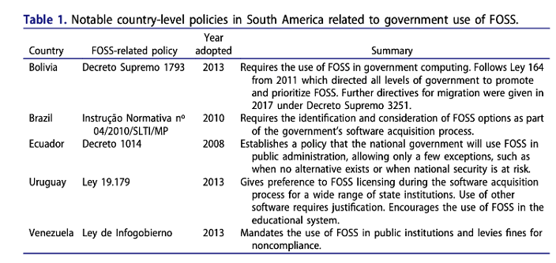
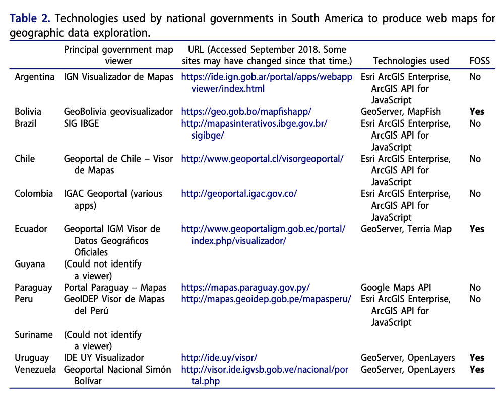
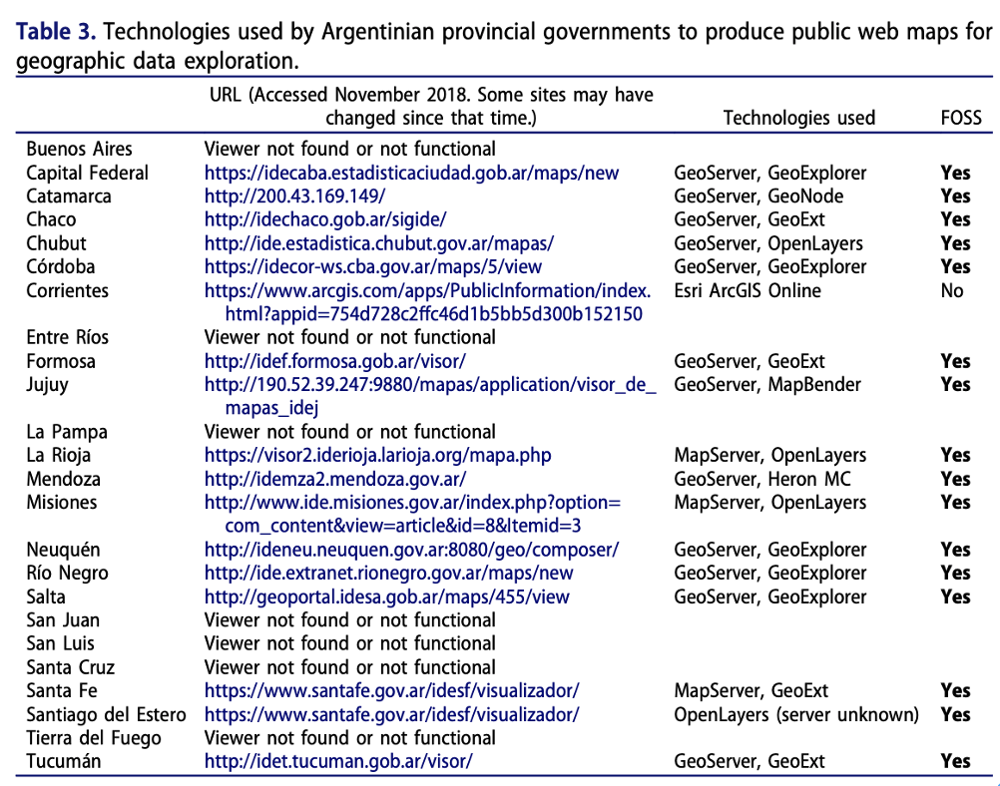

Abstract
Geographical information systems (GIS) practitioners worldwide enjoy a growing array of free and open source software (FOSS) options. This software has expanded the accessibility of GIS in economically developing countries while fostering local technical expertise. This article reviews FOSS GIS uptake and advocacy in South America, especially how it relates to a climate of political friendliness toward FOSS in the region. The use or absence of FOSS GIS is assessed in public-facing web maps in South America, first at the national government level, and then at the provincial level using Argentina as a country of study. Local technical support groups and software development initiatives surrounding FOSS GIS in South America are then summarized. Finally, three case studies are presented of notable efforts to build FOSS GIS technical communities at the local level: the FOSSGIS Brasil online magazine, the Geoinquietos Argentina professional network, and the FOSS.4GIS.GOV conference in Brazil. A study of the leaders, dynamics, and practices of these groups can inform others in similar circumstances around the world who are trying to promote FOSS GIS adoption, development, skills, and services.
Free and open source GIS in South America: political inroads and local advocacy
文章讨论了开源GIS，分析了南美洲自由开源GIS的发展及由来，重点讨论了政治上及地方性的支持对于南美洲开源GIS发展的积极推动作用。整篇文章相对而言技术性偏弱，侧重调查及讨论分析，但将南美洲各地开源GIS的发展历程呈现出来给读者，也有助于GIS社区对GIS技术发展趋势进行更深入的思考。
本文做了什么工作？ 回顾了南美洲对于自由开源地理信息系统（FOSS GIS）的吸收与宣传，特别是FOSS与南美洲各区域对其的友好政治氛围的关系：
- 国家层面对FOSS GIS的接纳程度
- 围绕开源GIS技术支持和软件开发而进行的地方性的努力
- 分析了自由开源GIS技术社区的三个卓有成效的案例
0x00 背景介绍
什么是自由与开源软件？
FOSS一词指的是其许可证符合自由软件基金会列出的四项基本自由的软件：
- 按照自己的意愿运行程序的自由；
- 研究和修改程序的自由；
- 重新分发副本的自由；
- 分发自己修改版本的自由
关于GIS软件市场
流行的自由开源GIS软件有哪些？
- 桌面式制图与数据处理: QGIS、GRASS、gvSIG、SAGA
- 网络地图发布: MapServer、GeoServer
- 网站编程: Leaflet、OpenLayers
- 后端数据处理: PostreSQL、PostGIS
流行的商用GIS软件有哪些？
ArcGIS、MapInfo、Manifold GIS
为什么要关注南美洲的开源GIS软件？
主要有两个原因：
- 南美洲有很多政府部门采用FOSS GIS
- 无论是从政治上还是从地方性运动来看，南美洲地区对于FOSS GIS的态度北半球地区具有明显差异
0x01 南美洲政府对于FOSS的接纳程度
助攻1: 鼓励在政府计算机中使用自由与开源软件
南美洲的市、州和联邦各级都有各种独特的法律和法令，促进在政府计算机上使用自由和开放源码软件。这包括至少五项国家一级的政策(图1)，这一比例高于其他任何洲。 
助攻2: 鼓励在政府公务中使用FOSS
除了鼓励FOSS之外，有些政府甚至规定在国家公务中使用FOSS。例如，委内瑞拉的 “Infogobierno “法律要求公共机构的技术架构向FOSS迁移，玻利维亚颁布了一系列法令，引导公共部门向FOSS迁移。
与世界上其他地区相比，采用FOSS的严格规定的趋势在拉丁美洲和非洲更为普遍。其他地区的政策更多地发挥不干涉的咨询作用。
问题：为什么南美洲政府会对自由开源软件如此追捧？
技术因素
在发展中国家当中，如南美洲的许多国家盛行盗版软件，导致其对专有软件的需求得到满足，但这实际上促进了供应商对这些地区的技术封锁。近年来，政府对盗版软件的打击导致公共机构寻找成本较低的软件替代品。其中一些人转向了自由和开源软件，认为它们不仅可以节约成本，还可以培养当地人的技能，发展特定的应用，并实现社会变革。
除了像GIS这样的专业软件外，政府采用的FOSS还包括操作系统、网络服务器、数据库和办公软件，如文字处理机和电子表格管理程序。有学者认为自由和开放源码软件许可证的性质允许任何人对这些程序的源代码进行审计和检查，从而建立了一道防止黑客和外国破坏的防线（Oram，2011）。这些许可证还允许对代码进行修改和再分发，提供了一种修复、增强或国产化软件的方法，而无需等待供应商发布（可能代价高昂的）升级。
经济因素
- 减少专用软件许可费和盗版软件罚款项的支出
自由和开源软件对公共部门的一个吸引力因素是：软件可以在免许可费的情况下进行分发。以往政府办公室维持专有软件运行所需的资金数额很大。例如，一位巴西官员估计，在1999年到2004年之间，巴西支付了10亿美元的软件许可费和版税，而且每年需要20亿美元起才能付清由其雇员使用盗版软件所导致的罚款。巴西联邦数据处理服务机构SERPRO报告说，2003-2008年卢拉政府执政初期，巴西通过在公共部门的计算机上采用自由和开源软件，节省了3.8亿雷亚尔(约合1.6亿美元)。
- 长期维护成本较低
虽然节省的软件许可证费用可能被视为自由和开放源码软件的决定性好处，但也必须考虑到总体拥有成本(TCO)。这包括迁移到新的软件，培训使用它的员工，以及长期维护系统（Shaikh和Cornford，2012）。Ghosh(2003年)认为，在经济发展国家，自由和开放源码软件的优势更加明显，因为与发达国家相比，劳动力成本在总拥有成本中所占比例较小。
社会因素
南美洲政府促进自由和开放源码软件的原因不仅仅是经济问题，还涉及到对社会、主权和国家作用的态度。
微软秘鲁公司与立法者Edgar Villanueva就一项拟议的法案(后来被大大削弱)进行的公开辩论就说明了这一点，该法案将要求秘鲁政府的计算机使用自由和开源软件。微软警告说，这项规定将导致过高的迁移成本、平台不匹配和生产力降低。Villanueva和自由软件的倡导者反驳说，自由和开源软件是国家保证公民能够获得公共信息的唯一途径，包括存储和保护个人记录的代码（Chan 2004）。
Chan(2004)指出，这种推理方式与北美的FOSS推广有一个关键的区别，北美的支持者往往强调FOSS对消费者自由的保护。设在南美洲的自由和开源软件倡导者帮助Villanueva起草了答复，他们的论点是保护集体社会权利。一位参与辩论的阿根廷自由和开源软件倡导者说：“成本是重要的，但它只是次要的。当我们开始思考存储公民个人数据的政府系统中可能存在的不安全因素，以及处理这些数据的方式时，作为一个公民，我关心系统是如何保护这些数据的”（Chan 2007）。
政治因素
在南美洲，从自由软件倡导者的言论一直到国家元首的演讲可以看出，社会各阶层都出现了将自由和开源软件作为摆脱以美国为基础的专有软件公司垄断地位的独立途径的想法。Zanotti(2014)引用一位阿根廷黑客的话说。“如果我们谈论自由和开源软件，我们最终会谈论政治。我们不会谈论编程”。
- 将FOSS作为摆脱美国公司垄断的途径
南美洲对自由和开源软件最有力的支持政策是在2000年代初所谓的 “粉红潮 “时期，当时有一大批有号召力的左倾领导人上台，承诺挑战该地区的新自由主义霸权。作为该议程的一部分，他们热衷于推广自由软件，以替代美国制造的专有软件。2007年4月，当时的厄瓜多尔总统Rafael Correa甚至在电视上宣称，公开采用自由和开放源码软件是’拉丁美洲迈向一体化的重要步伐，或者说是走向解放的重要一步'。
- 将自由和开源软件与社会主义理论联系起来
玻利维亚所有与自由和开源软件有关的政策都是在埃沃-莫拉莱斯的领导下出台的，目的是为了打破技术和信息依赖的束缚，保证技术主权。在委内瑞拉，乌戈-查韦斯一再将自由和开放源码软件与社会主义理论联系起来，并使用 “自由”、“平等 “和 “独立 “等词语来宣传它。在委内瑞拉，Hugo Chávez一再将自由和开源软件与社会主义理论联系起来，并使用 “自由”、“平等 “和 “独立 “等词语来宣传。以这种方式将自由和开放源码软件政治化，有时很难说服那些不同意查韦斯革命的人进行软件迁移，但从政策的角度来看，它成为了该地区最严格的自由和开源软件授权法案之一。
0x02 南美洲的FOSS GIS：推动力与主张
最早关于地理信息系统和社会的一些讨论提出了关于软件成本及其对可访问性的影响的警告(Sheppard 1995, Harris and Weiner 1996)。 在大多数自由和开放源码软件开发之前，Yapa(1991年)说，商业地理信息系统的高价位使发展中国家的学生、教师和小商店望尘莫及。他建议通过开发 “公共领域地理信息系统 “以帮助补救这一问题。
大约在那个时期，一些如GRASS和MapServer的FOSS GIS项目发展势头良好。现在，众多的自由和开放源码软件选项允许桌面式的GIS数据处理、制图、网络服务托管和网络应用开发（Steiniger和Hunter，2013）。这种软件使用包括专有公司和开源社区在内的6个联合体开发的开放数据规范进行操作。自由和开源软件的使用是GIS向开放文化转变的一部分，包括开放数据、开放研究和开放教育(Sui 2014)。
通过对公开的网络地图的研究窥见实施模式
与一般自由和开源软件一样，有证据表明，整个南美洲都有吸收和倡导自由和开放源码软件地理信息系统的强劲潮流，尽管有些是地方性的，需要在个别国家或分区域进行更详细的研究。例如，对公共或私营组织进行调查，询问它们对GIS软件的偏好，将是一种有用的方法。通过观察公开提供的地理信息系统和制图网站所使用的工具，也可以看出许多关于软件使用趋势的情况。为了说明南美洲各种政府地理信息系统团体积极使用自由和开放源码软件，这里在两个地理范围内采用后一种方法。
大多数南美国家都有一个制图机构，与公众分享在线地理数据和网络服务。这些机构经常主办交互式网络地图，用户可以在其中探索现有的地理图层或获得有关该国的一般信息。下表显示了研究时10个国家的主要地图可视化网站的地址，建立每个网站所使用的技术，以及这种技术是否可以被认为是FOSS。在本表中，“主要浏览者 “被认为是来自负责该国地理、制图或空间数据基础设施活动的机构。该技术是通过观察网站的源代码文件和网络流量来确定的，这些信息对于任何网站来说都是可以获得的，无论它是否是用自由和开源软件建立的。

省级和市级政府的软件趋势可能与国家一级使用的软件有明显不同。例如，用同样的方法可以看出，阿根廷几乎所有的省级政府都在其地图查看器中使用自由和开放源码软件。表3显示，在阿根廷的23个省和联邦区中，有16个省提供了用FOSS GIS建立的地图查看器，而有一个省则是用专有的地理信息系统软件建立了地图查看器。这些数字与美国各州政府的专有GIS软件所占的强大市场地位形成鲜明对比。 
上表中大部分省级站点都在使用OpenLayers、MapServer、GeoServer等知名的基础FOSS GIS软件。一些网站的稳定性和长期维护似乎是一个挑战：即使网站的其他部分似乎可以运作，但在本研究中访问时，有时流式地图层无法运作。需要进行更多的研究，以了解这些挑战是由于资金不足、难以找到或留住熟练工人、政府和顾问之间的动态、软件本身的缺陷，还是其他原因。
自由和开放源码软件地理信息系统的当地技术支持小组
FOSS GIS活动的另一个证据是当地技术支持网的存在，软件用户可以在这里交流故障解决技巧，分享想法和成功故事，发布就业信息，并安排具有类似技能和兴趣的人参加会议和聚会。正如在自由和开放源码软件中观察到的那样，这些 “社区 “提供了技术帮助、友谊和认可的途径，并且以共同的哲学动机聚集在一起（Zanotti 2012）。它们培养当地的专业知识，并通过促进软件的文档、培训和翻译，扩展了用户对软件的选择范围(Câmara和Fonseca，2007年)。 OSGeo是一个致力于推广开放地理空间技术的全球性非营利组织，已经培育了一些这样的社区（Brovelli等人，2012）。OSGeo提供了地方分会，填补了韩国、意大利和日本等地对特定语言支持的需求（OSGeo 2017）。这些分会提供的资源包括翻译文档、区域用户见面会、邮件列表和社交媒体源。在伊比利亚-美洲，OSGeo的西班牙语分会得到了一个名为Geoinquietos的小组的更多本地化分会的补充，在阿根廷、玻利维亚（圣克鲁斯）和巴西（巴西利亚）出现了分会。 本文稍后将对阿根廷Geoinquietos的案例进行更详细的研究。 一个类似的全球支持团体网络，称为Maptime，更多的是针对初学者，也看到了在哥伦比亚波哥大和巴西坎皮纳斯创建的分会，但这些似乎已经减弱，而Geoinquietos和其他有组织的努力已经增加了人气。
其他一些区域性会议也形成了一些势头，包括FOSS.4GIS.GOV系列会议，重点是巴西的政府应用(下文也提到)。在圣保罗和利马举行了讨论众包地理数据库OpenStreetMap和相关工具的区域 “地图状况 “会议，2014年在布宜诺斯艾利斯举行了世界性的 “地图状况 “会议。 阿根廷地质调查组织的成员在主办这次会议方面发挥了重要作用。
有些用户小组是围绕着某一产品或项目组织的。在巴西、秘鲁和哥伦比亚注册了流行的桌面地理信息系统程序QGIS的技术支持小组。 他们举行会议，提供研讨会，在社交媒体上广播新闻，并提供技术资源的链接，包括专门从事自由和开放源码软件GIS的顾问。 QGIS Brasil通过将界面翻译成葡萄牙语为软件开发做出了贡献，从而使更多的用户能够使用该软件（Nanni，2016年）。
其他团体则围绕特定的事业或身份组织起来。这些团体包括在哥伦比亚至少四所大学开展活动的各种YouthMappers分会，这是一个以学生为基础的团体全球网络的一部分，这些团体利用开放的地理空间技术开展服务和进行人道主义相关的绘图工作。另一个例子是GeoChicas，它动员妇女增加OpenStreetMap所包含的特征的广度，并强调文化景观中刻画的性别不平等，例如以女性命名的街道比例相对较小（Revista de la Universidad 2018）。该小组始于伊比利亚美洲，并已扩展到美国、非洲和欧洲许多地区。其基于自由和开放源码软件的性别空间重新映射是对批判性和女权主义地理信息系统实践的一个值得注意的贡献(Pavlovskaya和St. Martin，2007)。
当地软件开发
FOSS GIS在任何地区的存在的一个重要标志是当地软件的生产和改进。事实上，政府支持自由和开源软件的一个常见的论断是，资金应该投资于当地的技术专长和编程，而不是把钱给外国公司(Maldonado 2010年，Evangelista 2014年，Milano 2016年)。FOSS开发就是这一过程发生的证据。南美洲的FOSS GIS开发工作包括上述用户界面的翻译、产品的测试和使用，以及创建新的软件以满足社区需求。 伊比利亚—-美洲已经孵化了几个在南美洲广泛使用的自由和开放源码地理信息系统程序。其中之一是gvSIG，这是一个在西班牙巴伦西亚开发的桌面地理信息系统程序。它对南美洲的机构很有吸引力，因为它的界面最初是用西班牙语开发的，而且产品的许多文件和支持都是用西班牙语和葡萄牙语提供的。这使得新用户可以在没有语言障碍的情况下了解GIS。在gvSIG的15个全球用户组中，有8个设在南美国家14 ，有几个还举行了推广该软件的区域会议。
另一个称为SPRING的地理信息系统是由巴西国家空间研究所开发的（Câmara等，1996）。 SPRING的重点是从遥感数据中处理和提取信息，尽管它也支持矢量数据。 该软件一直是免费的，经过代码清理后，最终以开放源码许可的方式发布。 在超过100万行代码的情况下，它仍然在巴西的大学和政府应用中普遍使用（Medeiros，2011）。
巴西政府和教育机构开发的其他开放源码地理信息系统工具包括i3Geo、E-foto和TerraLib。i3Geo是一个网络制图和地理处理框架，最初由巴西环境部开发，目前由卫生部维护。E-Foto是里约热内卢州立大学开发的摄影测量工作站软件。其目标是为学生提供一种成本低廉的方式来学习数字摄影测量工作流程（Mota等人，2012年）。最后，TerraLib是一个支持时空建模、数据挖掘和分析的软件库，特别是用于社会和环境应用。它由INPE在里约热内卢天主教大学(PUC-RIO)和开发GIS应用的非营利组织FUNCATE的支持下开发。据Câmara和Fonseca(2007年)说，TerraLib的目的是为巴西用户提供商业地理信息系统软件的替代产品，以避免被供应商锁定。 一个补充产品是TerraView，这是一个通用的地理信息系统，可以与TerraLib数据库配合使用（Câmara等人，2008年）。
0x03 案例分析
FOSSGIS Brasil杂志
- 雄心勃勃的努力：自由与开源GIS相关信息的传播媒介
2011年，巴西系统分析师Fernando Quadro创办了一本葡萄牙语杂志，这也许是以期刊形式发布FOSS GIS信息的最雄心勃勃的努力。Quadro注意到巴西在FOSS GIS方面有很多有趣的工作，但是关于它的报道却分散在不同的出版物中，其中一些是以专有软件为中心。Quadro向他欣赏的人发出邀请，问他们是否愿意帮助创建一个完全关于FOSS GIS的出版物（Mendonça，2012）。结果是一本名为《FOSSGIS Brasil》的数字杂志，在2011-2012年出版了六期，内容丰富多彩，信息量很大，目标是每季度发行一次。期刊的长度大约在50至80页之间。
最初的编辑核心成员利用他们的专业网络寻找可以撰写内容的自由和开放源码地理信息系统专家。该杂志包括关于自由和开放源码地理信息系统软件选择的文章，一个比较自由和开放源码地理信息系统与专利软件功能的专栏，巴西政府各部门成功实施软件的案例研究，以及对巴西自由和开放源码地理信息系统界人物的采访。例如，有一期杂志刊登了与时任巴西国家空间研究所所长的Gilberto Câmara关于SPRING GIS发展的对话(Medeiros，2011)。 该杂志的地图画廊部分允许在巴西工业和政府工作的GIS分析师和制图师展示他们的工作。画廊的贡献者包括地理学家、教师和州、市两级的政府规划官员。

- 难以为继的壮志
该杂志的专业范围和外观掩盖了它完全由志愿者制作的事实，其中许多人还在养家糊口，从事全职工作，甚至经营自己的生意。由于投稿人面临着许多承诺，最初的季刊目标变得难以维持。FOSSGIS Brasil在大约一年半后戛然而止，但它的长期效益包括志愿者撰稿人建立的友谊和专业关系，其中一些人相隔数千公里，只能通过电子邮件交流（F. Quadro，2018）。此外，该杂志的后几期仍可在网上查阅，并构成了关于当时可用的自由和开放源码软件GIS选项的有用的葡萄牙语入门知识（其中大部分仍然适用）。
今天，FOSSGIS Brasil的身份仍然是Facebook和Twitter，Quadro也有一个活跃的技术博客。这些社交媒体渠道允许更频繁的出版周期，而且它们比长篇杂志更容易维护。
Geoinquietos Argentina
- 不安分的GISer
Geoinquietos是伊比利亚-美洲各地对地理空间科学和自由和开源软件感兴趣的地方团体网络。Geoinquietos阿根廷分会是这些团体中最活跃的一个，多次组织会议，吸引了南美南锥体地区和其他地区的数百人参加。Geoinquietos阿根廷分会的历史可以追溯到2007年OSGeo西班牙语分会的成立。由于西班牙语在广泛的地理区域内使用，因此需要更多的当地兴趣小组，让人们可以面对面地交流，分享与某个城市或国家相关的信息。因此，OSGeo西班牙语维基页面上最终形成了一个 “Geoinquietos “分会列表。西班牙文inquieto的意思是不安分或前卫；描述了这个群体对不断活动和自我提升的亲和力。
- 日益壮大的队伍
最初的几个Geoinquietos分会在西班牙，但在2012年5月，Mauricio Miranda添加了Geoinquietos布宜诺斯艾利斯分会（现为Geoinquietos阿根廷分会）的链接，这是西半球的第一个分会。从那时起，该地区又出现了其他Geoinquietos分会。巴西和葡萄牙也成立了分会，这一事实表明，Geoinquietos的品牌和使命可能与伊比利亚-美洲的特性而非西班牙语有更紧密的联系。 Geoinquietos阿根廷分会在2013年、2016年、2017年和2019年组织了 “FOSS4G阿根廷 “会议（发生在本稿件首次提交之后）。这些都是OSGeo的旗舰FOSS4G会议的地方变种，用于所有与FOSS GIS相关的事情。2017年的会议采用了FOSS4G+SOTM的双重绰号，以表明其与地图状态OpenStreetMap会议的关系。当年10月，会议在布宜诺斯艾利斯的阿根廷国家地理研究所（IGN）举行，为期六天。这次活动包括一个教育工作者圆桌会议日、两天的技术讲习班、两天的技术专题介绍和最多三个同时进行的会议轨道，以及一个黑客马拉松日，与会者为自由和开放源码软件地理信息系统项目，如OpenStreetMap、GeoNetwork和pgRouting做出了贡献。
在2017年FOSS4G阿根廷的一次全体会议上，Miranda作为Geoinquietos阿根廷分会的发言人，介绍了该团体及其实践的概况（Miranda 2017）。他为该团体列举的目的包括商业和休闲的结合：学习、娱乐、工作、挣钱、教学、吃asado（阿根廷传统烧烤）、喝啤酒和改变世界。Miranda形容这个团体完全是无政府主义的，参与者没有等级制度。他坦言，利用FOSS提高成员的赚钱能力和商业潜力是一个真正的目标（“我们不是嬉皮士”），这也是前面提到的Evangelista（2014）“开放 “阵营的一个特点；然而，这个团体的理念与商业软件开发者不同：主要目标是分享知识和努力。虽然Miranda承认这看起来似乎不尽如人意，他指出，各省等政府实体往往一次又一次地向私营GIS咨询公司支付同样的服务费用，当社区可以共享技术信息时，这种冗余是一种浪费。
Geoinquietos通过会议、非正式社交聚会(“geobeers”)、研讨会、FOSS4G会议、邮件列表、在线移动消息组和Twitter账户来完成其任务。该小组得到了阿根廷地理学院IGN的支持，从会议地点就可以看出，同时也得到了一些员工的FOSS宣传，包括当时的空间信息主任Horacio Castellaro。在这次会议的一个即兴小组讨论中，Castellaro提到他希望研究所完全摆脱与商业软件的联系。他强调，在商业软件上花费的每一比索都是国家损失的比索，而阿根廷没有办法把这些比索找回来。他认为，花在自由和开源软件上的比索将帮助更广泛的利益相关者群体。 会议主任Malena Libman也在小组讨论中分享了Geoinquietos如何为她提供完成地理空间技术学位所需的社会和技术支持。她说，Geoinquietos的发展是很重要的，因为世界不只是由欧洲和美国组成。自由和开放源码软件在阿根廷的扩展使得以前无法获得的新数据得以公布。虽然Geoinquietos的组织者们为了举办这次会议付出了漫长的时间，而且入场费不到17美元，但Libman只要求参与者用他们对社区的参与来 “支付 “他们。 会议组织者宣布，超过115人参加了此次活动，代表了政府、私营企业和大学的各种形式。也许是由于周边国家类似会议的稀缺性，造成了与会人员的多样性，其中包括来自智利、巴西、巴拉圭和委内瑞拉的与会者。在议程上发言的其他国家包括西班牙、墨西哥、秘鲁、意大利和美国。 阿根廷地质调查组织是如何如此成功地定期组织大型、技术性、低成本和有吸引力的会议，将成员聚集在一个地域辽阔和多样化的国家？正如前面提到的小组会议所证明的那样，该小组得益于一个高度敬业和始终如一的核心人员，而不是一个人做大部分工作。它还通过与那些兴趣相近，但社会和技术关注途径略有不同的团体结盟，找到了力量。例如，2019年，Geoinquietos Argentina联合OpenStreetMap Argentina和GeoChicas，根据阿根廷法律正式注册为非政府组织。这个组织自称GeoLibres，也就是 “地理自由者”。该组织的成立是为了向这些团体所服务的技术社区发出长期承诺的信号(M. Miranda 2018)。
- Geoinquietos的成员 该小组的许多成员是年轻的专业人员，他们通过当地的活动和该小组的交流渠道相互认识。这些联系由于该小组使用Telegram消息系统作为主要的交流手段而得到加强。Telegram可以被认为是一种发生在手机应用中的公共聊天室。Telegram的使用使Geoinquietos Argentina有别于其他许多使用传统邮件列表技术的FOSS GIS特殊兴趣小组，这让人回想起使用电子邮件多于短信的一代。即使是Twitter这样的社交媒体也可能过于正式和有条不紊，而不适合Geoinquietos Argentina Telegram聊天的特点，即欢快、轻松、偶尔也会有技术性的玩笑。
该小组还注重包容性，最近改变了一些品牌和宣传，使用了更加中性的 “Geoinquiet@s “一词。在政府设施内举行会议可能降低了成本，帮助该小组欢迎来自不同行业、国家和技能水平的人员。技术研讨会、教育者论坛和黑客运动的加入，扩大了参与者的帐篷，增加了会议体验的价值，使会议参与者有多种理由证明他们的出席，并获得最大的旅行投资回报。
地理条件本身也可能对该团体的成功起到了一定的作用，因为阿根廷的经济和政府由布宜诺斯艾利斯主导，这个拥有近1500万人口的城市与该国其他地区有着良好的联系（联合国2018年，第25页）。对于许多与会者来说，参与活动需要跳上汽车、公共汽车或地铁，或最多乘坐一次短途飞机。全年的活动经常将参与者聚集在一起，这样，FOSS4G会议并不是他们聚集的唯一时间。其他南美的首要城市，如利马、圣地亚哥和蒙得维的亚可能会提供重要的潜在利益基地，可以孵化当地的技术社区。在较大的国家或没有灵长类城市的国家，如巴西，情况有所不同。巴西的地理环境，除了首都之外，还有几个主要的技术和经济中心，这可能会使形成一个核心的组织者群体具有挑战性，尽管它肯定可以为许多知识渊博和热情的参与者创造条件
FOSS.4GIS.GOV conferences in Brazil
阿根廷Geoinquietos在聚集FOSS GIS社区方面的成功，在南美其他地区也得到了关注。曾经的FOSSGIS Brasil系列杂志的编辑Fernando Quadro在他的博客上感叹道：“为什么我们在这里没能举办如此规模的FOSS4G阿根廷活动？“为什么我们没能在巴西举办如此规模的活动（FOSS4G阿根廷）？. . . 我想知道为什么像巴西这么大的国家，有这么多有能力的人从事开源GIS，却没有一个年度活动来让社区聚集在一起，分享经验，建立网络和社交”（Quadro 2016）。在Quadro的文章之后，似乎有一些行动在2017年组织一个FOSS4G巴西会议，但计划最终被取消了。
其实，在巴西首都已经发生过几次引人注目的开源GIS软件爱好者的聚会，但它们主要集中在政府应用方面。在2016年和2018年，FOSS.4GIS.GOV会议都聚集了数百名来自政府各部门的专业人士，分享他们对自由和开源地理空间技术的经验。这些会议的发言人包括来自国家数据处理服务机构SERPRO、巴西环境和可再生自然资源研究所（IBAMA）、奇科-门德斯生物多样性保护研究所（ICMBio）、国家电信局（ANATEL）、联邦警察和军队的代表。州级政府雇员、大学教授和QGIS Brasil的志愿者也做了演讲。参加这些活动是免费的，会议记录被张贴在YouTube上，为地理空间自由和开放源码软件界提供了一个有用的葡萄牙语信息来源。
FOSS.4GIS.GOV的两次迭代都是在巴西利亚的IBAMA总部举办的，免费入场。在2018年会议的开幕式上，IBAMA的副主席Luciano Evaristo表示，该组织与联邦和地方警察联合开展的所有反砍伐森林任务都是从地质勘探工具开始的。Evaristo指出，他很早以前就看到了更换地质设备的经济价值。但他也对IBAMA通过实施自由和开放源码软件获得的软件质量印象深刻。
对于IBAMA转向使用开放源码地理信息系统软件而言，国家环境信息和监测中心总协调员George Porto Ferreira发挥了重要作用。他的团队积极参与了Evaristo提到的亚马逊森林砍伐检测工作。与FOSS GIS社区的长期成员Luiz Pacheco Motta和IBAMA的其他同事合作，Ferreira带头举办了FOSS.4GIS.GOV系列会议。GOV系列会议。2016年的第一次聚会得到了欧盟方面的一些资助，并欢迎来自丹麦和意大利的访问代表。2018年的会议没有得到这笔资金，但看到会议向与主线FOSS4G系列会议的关联性靠拢。OSGeo似乎是一个潜在的未来资金来源，可以帮助确保活动的长期性，尽管一个更大的因素可能是IBAMA及其员工（或类似机构）定期支持会议的持续能力和主动性。
0x04 结论
自由和开源GIS软件在南美洲有很强的影响力，政府在交互式地图网站中使用自由和开放源码软件，各种自由和开源软件的GIS和制图技术支持小组，以及开发软件以满足当地的地理探测需求，都证明了这一点。其中一些成功可能是由于整个地区对自由和开放源码软件的普遍友好态度，一些政府强制要求使用自由和开放源码软件，或者至少考虑将其作为专有软件的替代品。这种对FOSS的亲和力包括经济上的考虑，但也有一种强烈的信念，即保持软件代码的透明和投资资金的本地化是符合国家利益的。 本文对政府在国家一级使用和推广自由和开放源码软件给予了很多关注。由于南美洲的国家相对较少，如果不研究更多的地方政府层面，很难得出结论。除了本文研究的阿根廷各省外，还可以查询其他省市的FOSS实施情况，以更好地判断整个大陆的FOSS GIS吸收情况。对私营部门以及教育和非营利机构的调查将有助于提供全面的评估。研究自由和开放源码软件GIS在高等教育中使用的演变情况，以及这对每个国家的一般软件组合产生了什么样的影响(如果有的话)，将是很有参考价值的。
本文讨论了三个特别成功的案例研究，这些案例研究通过教育和分享技术知识来推广自由和开放源码软件GIS并团结当地用户群体。这些案例研究的共同点是它们连接个人的能力。FOSSGIS Brasil在线杂志将一个庞大而多样化的国家的专业人士联系在一起。阿根廷的Geoinquietos小组通过现代移动通讯技术和定期聚会，使从业人员保持持续的联系。FOSS.4GIS.GOV会议将不同部委和不同管辖级别的政府官员联系起来。
这三项工作中的每一项都是由积极性很高的人推动的，他们拥护自由和开放源码软件，并希望看到其在整个当地地区的使用。这种支持的理由包括经济利益(如IBAMA的Evaristo所提到的)，但也包括主权和政治的主题(如阿根廷Geoinquietos成员的声明，即软件投资留在当地是符合国家利益的)。这些将自由和开放源码软件的实施作为政治和经济独立的表现形式的想法在南美洲引起了共鸣。
这些案例研究中涉及的阿根廷和巴西政府雇员表现出Shaw（2011）的 “叛乱专家 “的一些特征，他们在渗透到Lula的巴西各部委后，煽动了对FOSS的迁移。他们利用现有的权力在各自的机构中实施FOSS GIS。同时，南美洲和其他地方的政府实体经常看到雇员使用FOSS和专有软件混合使用，以满足个人偏好和功能需求。混合的方法可能会继续流行，尽管上述对国家网络地图浏览者的研究确实传达了这样一个教训：当FOSS被授权时，FOSS就会被使用。 世界各地的FOSS倡导团体可以从这些案例研究中学到什么？FOSSGIS Brasil杂志的退役和上面提到的一些其他技术支持团体（如Maptime）的活动水平有时会消失，这表明长期的势头是一个挑战。对于自由和开放源码软件来说尤其如此，因为很多工作都是由志愿者完成的，他们的兴趣和可能性可能会随着工作和生活阶段的不同而改变。Geoinquietos阿根廷分会的分权性质似乎帮助传递了持久的力量，Telegram消息系统使这个小组保持了灵活性、包容性和联系。最后，支持性合作机构的存在可以为会议提供场所，并提供一批有兴趣的活跃人士。 面对面的聚会需要付出极大的努力来执行，但却能在技术上和社会上促进招募和加强组织者的核心团队。2018年，全球FOSS4G大会首次来到非洲（达累斯萨拉姆），Geoinquietos阿根廷分会正在准备申办2021年在布宜诺斯艾利斯举办的大会。重新评估 “北美、欧洲、世界其他地区 “三年一次的FOSS4G会议轮流举办，以包括更灵活的国家组合，可以帮助OSGeo培养更多的全球焦点（尽管这种做法确实确保北美和欧洲并不总是主导申办过程）。同时，OSGeo对区域和地方会议的支持有助于加强新的自由和开放源码软件社区。阿根廷FOSS4G和FOSS.4GIS.GOV都借助政府办公室帮助降低了费用，让更多的人能够参加会议，这与在波士顿举行的2017年全球FOSS4G会议形成了鲜明的对比，该会议在海港酒店和世界贸易中心举行，每人注册费用高达800美元。尽管如此，非政府资金流也是有帮助的：在巴西举行的FOSS.4GIS.GOV 2018会议由于资金来源较少，规模小于2016年的迭代会议，但如果与OSGeo保持紧密的联系，会议的长期延续和扩大前景似乎是积极的。随着软件的可访问性和普及程度的提高，这次会议和上述其他举措应该是那些正在推广和开发自由和开源软件的人未来的兴趣所在。
0x05 笔记
https://wiki.openstreetmap.org/wiki/GeoChicas.
http://www.gvsig.com/pt/comunidade/grupos-de-comunidades.
https://softwarepublico.gov.br/social/i3geo.
http://www.fernandoquadro.com.br/html/.
https://wiki.osgeo.org/wiki/Cap%C3%ADtulo_Local_de_la_comunidad_hispanohablante.